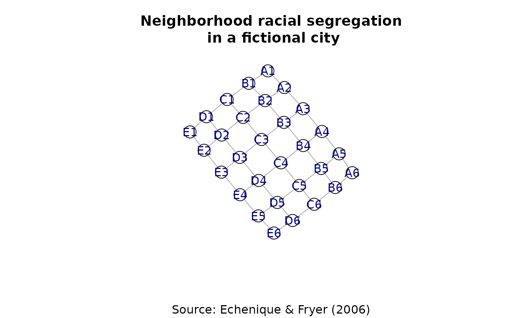

Artificial example data from Echenique & Fryer (2006) Figure III representing a city with black and white neighbourhoods.
Format
Object of class "igraph". An undirected network with vertex attributes:
name– vertex names of the form "A1" in which letter and number indicate the position in the latticerace– values 1 or 2 indicate the two groups
Source
Echenique, Federico and Roland G. Fryer, Jr. (2006) "A Measure of Segregation Based On Social Interactions" Quarterly Journal of Economics CXXII(2):441-485
Details
This data is taken from Echenique & Fryer (2006, figure III). The data represent a fictional city composed of 30 neighborhoods that are either black or white.
Examples
if(requireNamespace("igraph", quietly = TRUE)) {
set.seed(1)
plot(
EF3,
layout = igraph::layout.fruchterman.reingold,
vertex.color = igraph::V(EF3)$type+1,
vertex.label.family = "",
sub = "Source: Echenique & Fryer (2006)",
main = "Neighborhood racial segregation\n in a fictional city"
)
}
